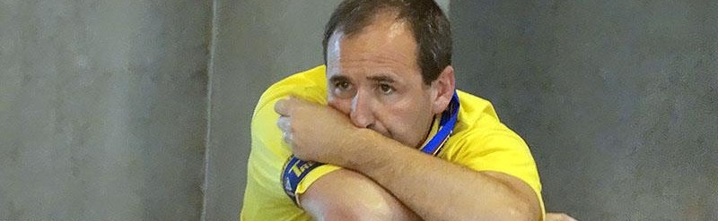
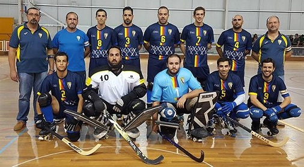

- Queremos uma defesa forte e agressiva, sem fazer faltas e sem ver cartões.
- Queremos ZERO faltas, ZERO cartões, ZERO livres diretos e ZERO penalties.
Não defendemos nas tabelas.
A pressão ofensiva na saída de bola do adversário é feita sem mãos.
Não basta ser sério, temos de parecer também
- Defendemos homem a homem... ou à zona, em caso de inferioridade.
- A pressão nos cantos defensivos é feita em 2x1 (mas sem perder de vista o jogador livre), sem faltas
- Na perda de bola fazemos pressão no 1º jogador a sair e na 1ª linha de passe (sem inferioridade). O objetivo é não deixar sair o contra-ataque.
- Atrás da baliza acompanhamos o adversário mas quando não é possível a marcação é HxH e não aos postes. O guarda-redes tem um poste e o defesa o outro.
- Queremos ganhar os jogos todos em contra-ataque.
- A defesa é baixa e interior do lado oposto da bola.
- Fazemos trocas sempre que necessário e não sempre que possível.
Na dúvida falem com o colega. Quando em 2x2 atrás da baliza fixamos nos postes.
- Em situações defensivas de 2x2, defendemos com um jogador à frente do outro, ficando o 1º com a bola.
Em situações defensivas de 3x2, defendemos à zona, ficando a bola para o guarda-redes.
Em situações defensivas de 2x1, a bola é do guarda-redes.
- Em situações de underplay, jogamos com um triângulo dinâmico, ficando a base (2 jogadores) do lado da bola (2 à frente com a bola longe da baliza e 2 atrás com a bola perto da baliza).
- Organizamo-nos em 2x2 e gostamos de partir o jogo.
- Ocupamos as 4 zonas do rinque e nunca temos 3 jogadores para lá da linha da bola.
- Preferimos ataques longos e bons do que curtos e maus (não tememos a penalização dos 45 segundos).
- Não rematamos de qualquer lado mas temos de rematar à baliza.
Sem remates não há golos.
- Há sempre um jogador perto da baliza.
Toda a jogada tem de ter uma possível recarga. Todo o movimento tem de prever uma entrada ao 2º poste
Jogos do APAC Tojal
-
Sporting de Torres 2 - APAC Tojal 4
-
APAC Tojal 4 - Nafarros 2
